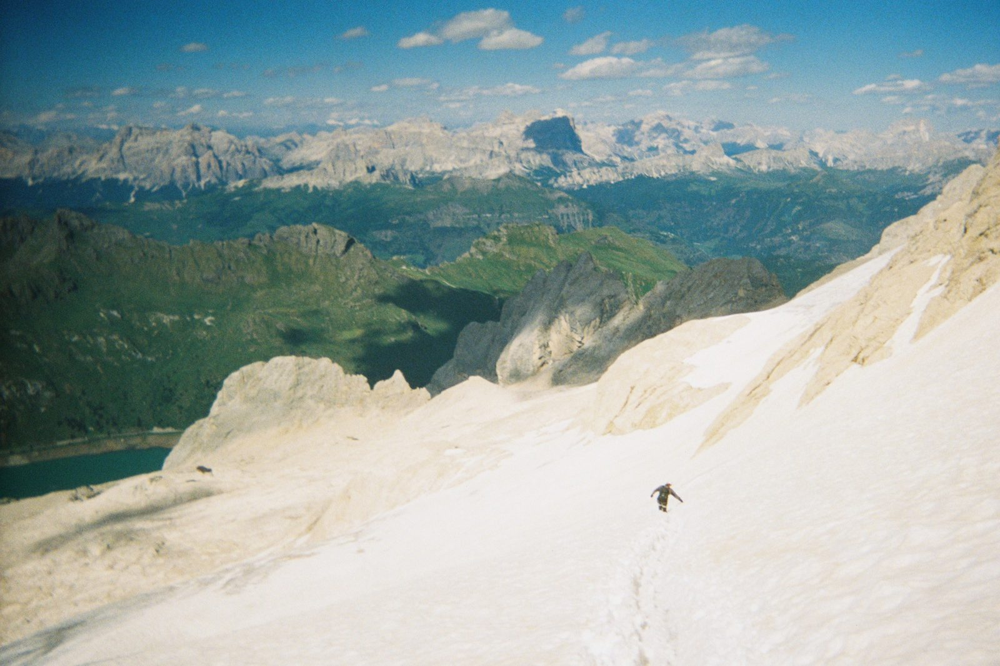
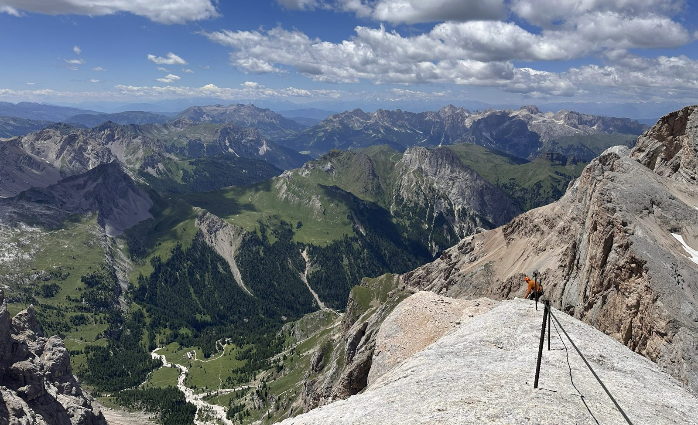
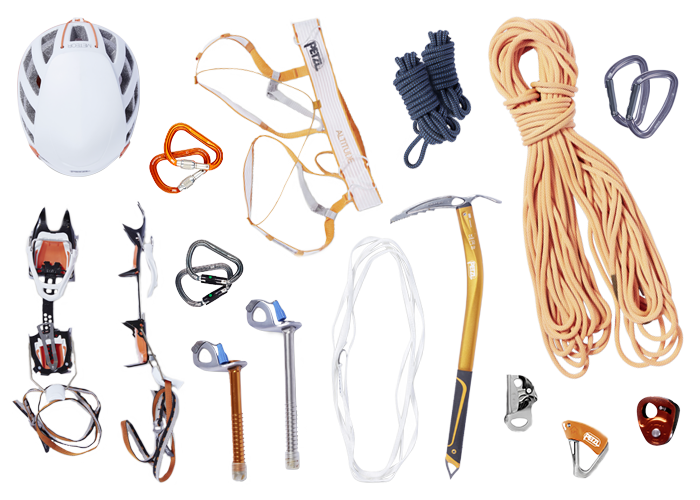

Moje hobby
Vo voľnom čase sa venujem horolezectvu, ktoré je jednou z mojich troch kľúčových vecí. Veľmi rád chodím do Tatier a nedávno som bol aj na najvyššom vrchole Dolomitov – Marmolada (3 343 m n. m.).


Moja horolezecká výbava
Nabehnite myšou alebo kliknite na oranžový bod (prípadne použite klávesu Tab) a zobrazí sa popis vybavenia.

Prilba
Chráni hlavu pred padajúcimi kameňmi, ľadom a pri páde.
Karabíny s poistkou
Spájajú lano s úväzkom, istiacimi pomôckami alebo kotviacimi bodmi.
Horolezecký úväzok
Slúži na bezpečné spojenie lezca s lanom a istiaci systém.
Prusíková slučka
Pomocné lano používané na samoistenie, výstup po lane alebo záchranu.
Horolezecké lano
Hlavný bezpečnostný prvok na istenie a zlaňovanie.
Karabíny
Používajú sa na pripájanie lana, slučiek a ďalšieho vybavenia.
Mačky
Upevňujú sa na topánky a umožňujú bezpečný pohyb po snehu a ľade.
Cepín
Pomáha pri pohybe v snehu a ľade, zastavení pádu a vytváraní opory.
Ľadovcové skrutky
Zavŕtavajú sa do ľadu a slúžia ako istiace alebo kotviace body.
Slučka
Používa sa na vytváranie kotiev, predlžovanie istenia alebo spájanie vybavenia.
Lanové blokanty
Malé, ľahké a mimoriadne užitočné v núdzových situáciách. Napríklad pri stavbe kladkostroja alebo pri samozáchrane po páde do ľadovcovej trhliny.